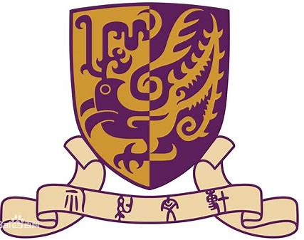

I am a first-year M.Phil. student of
the Chinese University of Hong Kong, Shenzhen,
supervised by
Prof.
Xiaoguang Han.
Before that, I obtained B.Eng. in Automation from
Huazhong University of Science & Technology (HUST).
I am honored to have worked with
Prof. He Wang
from Peking University.
Research Interests: I mainly focus on
3D Computer Vision.
- M.Phil. in Computer & Information Engineering
- Supervisor: Prof. Xiaoguang Han
|
|
|
|
|
*: equivalent contribution, #: corresponding author.

|
3D-Aware Object Goal Navigation via Simultaneous Exploration and Identification
Jiazhao Zhang*, Liu Dai*, Fanpeng Meng, Qingnan Fan, Xuelin Chen, Kai Xu, He Wang#
IEEE/CVF Conference on Computer Vision and Pattern Recognition 2023
[Paper]
[Code]
[Page]
|
Peking University
Beijing, China (Mar. 2022 - Oct. 2022)
Research Intern at
Embodied Perception and InteraCtion Lab (EPIC-Lab).
|
|
Honors and Awards
-
Scholarship for Scientific and Technological Innovation, HUST (2022, 2020)
-
National Olympiad in Informatics in Provinces (NOIP) (2018) First Prize
Talk
-
Navigation: Mapping & Planning
08/09/2022 EPIC-Lab 2022 Summer Robotics Seminar, Peking University
[Slides]
-
Vision in Scene Exploration
26/02/2022 EPIC-Lab 2022 Spring Seminar, Peking University
[Slides]
Miscellaneous
-
Friends (Ordered by Alphabets)
Chenyu Zhou |
Di Chang |
Junhua Liu |
Qi Fang |
Songlin Wei |
Tianyi Bai |
Wenjie Qu |
Yanjie Ze |
Yu Lei |
Zhihao Cao
-
Chinese Painting. I am a semi-professional artist practicing for 15 years+, Professional Grade 9 (top tier) on Flower and Bird.
I once went to Russia🇷🇺 for art exchange on behalf of China Academy of Art.
-
Football. I am a crazy football fan of Changchun and Barca. I play goalkeeper and won the 2nd place of HUST Cup Group-B
in 2022 spring on behalf of my department.